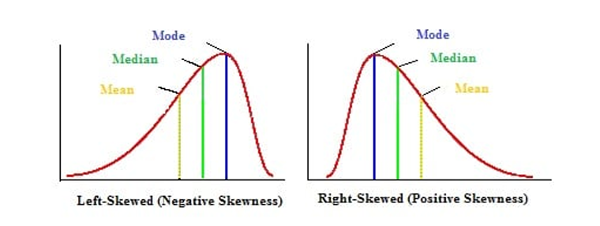

Week 7: Estimation#
Estimation#
This week you’ll learn the principles of deriving estimators, estimators of the mean and the standard deviation and their basic properties.
Reminder#
An estimator \(\hat{\alpha}\) is a random variable obtained from a particular sample
e.g. The sample mean \(\hat{\mu}\) in a binomial experiment
We derive the estimator \(\hat{\alpha}\) in two ways:
Method of moments
Least Squares
Measures of central tendency:
Mean: average of all number in a sample
Mode: Most often appearing value in a distribution
Median: Middle term in a sorted distribution.
relative position of measures for skewed data

Definitions#
Unbiasedness:
The Expected value of the estimator is equal to the true value of the parameter,
for the mean: \(\mathop{\mathbb{E}}(\hat{\mu})=\mu\),
for the variance: \(\mathop{\mathbb{E}}({\hat{\sigma}^2})=\sigma^2\)
Standard Deviation (SD):
Measures the dispersion from the individual data values to the mean
Standard Error (SE):
Measures how far the sample mean is likely to be from the true population mean.
Q16.
**Suppose you have a sample of data, \(Y_i, \quad i=1,2, \cdot , N\) where \(Y \sim \mathcal{IN}(\mu,\,\sigma^{2})\,.\)
Q17.
import pandas as pd
import numpy as np
import matplotlib.pyplot as plt
# Generate the random matrix using Pandas DataFrame
rows = 15
columns = 50
random_matrix = pd.DataFrame(np.random.uniform(0, 1, (rows, columns)))
random_matrix.iloc[0,:]
0 0.389274
1 0.590302
2 0.935308
3 0.186266
4 0.415793
5 0.385747
6 0.442049
7 0.496361
8 0.598341
9 0.789071
10 0.853394
11 0.664302
12 0.793711
13 0.126231
14 0.987122
15 0.790585
16 0.095691
17 0.106980
18 0.780406
19 0.842419
20 0.490712
21 0.128872
22 0.326964
23 0.634021
24 0.626033
25 0.747860
26 0.289918
27 0.208732
28 0.715977
29 0.971082
30 0.551944
31 0.628067
32 0.330333
33 0.354348
34 0.632053
35 0.915292
36 0.340030
37 0.884086
38 0.973701
39 0.645550
40 0.063926
41 0.860842
42 0.591753
43 0.687337
44 0.086412
45 0.036345
46 0.576146
47 0.270344
48 0.226971
49 0.341647
Name: 0, dtype: float64
# Compute the means of the rows
row_means = random_matrix.mean(axis=0)
row_means
0 0.360316
1 0.618035
2 0.597701
3 0.486418
4 0.381352
5 0.470516
6 0.436876
7 0.518027
8 0.610932
9 0.489101
10 0.539927
11 0.474365
12 0.549040
13 0.474176
14 0.428018
15 0.535534
16 0.499963
17 0.502081
18 0.585853
19 0.534605
20 0.497766
21 0.415992
22 0.494731
23 0.486723
24 0.587273
25 0.517662
26 0.436066
27 0.520414
28 0.608287
29 0.486381
30 0.519722
31 0.493951
32 0.521264
33 0.489570
34 0.547767
35 0.540592
36 0.511645
37 0.584369
38 0.576803
39 0.591896
40 0.512310
41 0.529105
42 0.494098
43 0.554727
44 0.333369
45 0.617524
46 0.628260
47 0.409855
48 0.527139
49 0.432483
dtype: float64
variance = random_matrix.var(axis=0)
variance
0 0.066906
1 0.099877
2 0.103859
3 0.106254
4 0.088726
5 0.064045
6 0.072315
7 0.087250
8 0.043967
9 0.074028
10 0.099895
11 0.079670
12 0.090613
13 0.057420
14 0.094933
15 0.088736
16 0.067189
17 0.063399
18 0.060405
19 0.088376
20 0.083374
21 0.086653
22 0.091536
23 0.058394
24 0.075192
25 0.097814
26 0.069092
27 0.085015
28 0.054262
29 0.096227
30 0.148846
31 0.078052
32 0.092201
33 0.080384
34 0.107421
35 0.074594
36 0.089907
37 0.068409
38 0.072383
39 0.111218
40 0.092127
41 0.059384
42 0.109390
43 0.105477
44 0.054209
45 0.120370
46 0.066831
47 0.106859
48 0.083664
49 0.094721
dtype: float64
# Standard deviation of the Mean
std_dev = row_means.std()
std_dev
0.06738734920047083
# Standard Error of the Mean
std_err = row_means.std() / np.sqrt(columns)
std_err
0.00953001031716776